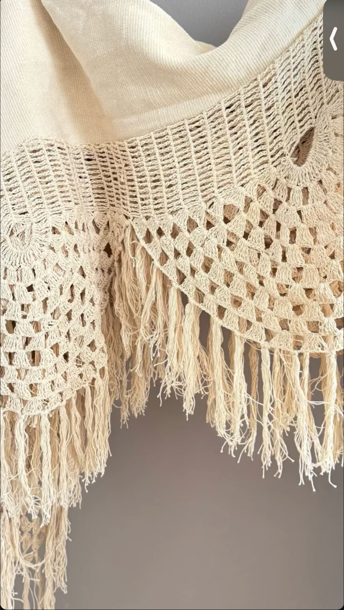

Nuestra historia
Territorio
y oficio
Una marca nacida del Caribe colombiano para celebrar el arte de las manos que tejen identidad.
Nuestra historia
Una marca nacida del Caribe colombiano para celebrar el arte de las manos que tejen identidad.
Quiénes somos
POPPY es el puente curado entre la maestría de las comunidades artesanales más apartadas de Colombia y el mercado de lujo global. Cada pieza que entra a nuestra tienda está seleccionada con un criterio claro: técnica excepcional, diseño contemporáneo y materiales 100% naturales.
No solo comercializamos objetos — narramos historias a través de piezas de diseño premium elaboradas con fibras naturales, preservando técnicas ancestrales que enfrentan el riesgo de desaparecer.
Nuestro catálogo abarca bolsos tejidos en fibras guajiras, objetos de hogar elaborados con materiales naturales del Caribe y sombreros de fino acabado artesanal — piezas únicas que no se encuentran en ningún otro lugar.

"No solo comercializamos objetos — narramos historias a través de piezas de diseño premium que preservan técnicas ancestrales en riesgo de desaparecer."Poppy Cartagena — Narrativas Artesanales
Ofrecemos una selección sofisticada y moderna de artesanía colombiana. Reunimos en un solo espacio las mejores piezas en técnica, diseño y mano de obra — ahorrando tiempo y esfuerzo al cliente exigente que busca lo genuino.
La tienda física es un destino imperdible en Cartagena. Brindamos asesoría honesta, cercana y experta: el cliente no solo compra un producto, sino que aprende sobre la cultura de Colombia.
Social: oportunidades económicas en zonas de difícil acceso. Cultural: valorización del conocimiento ancestral. Ambiental: consumo consciente con procesos sostenibles y materiales 100% naturales.
Las manos detrás
Trabajamos directamente con comunidades artesanales de zonas de difícil acceso, sin intermediarios. Cada pieza llega con la historia de quien la hizo.

Mujeres guajiras que han transmitido el arte del tejido de generación en generación. Sus diseños son un idioma visual único en el mundo.

Cada nudo, cada color y cada patrón geométrico responde a un conocimiento ancestral que no puede replicarse en serie.

Nuestro catálogo cambia con las temporadas y con los artesanos que incorporamos. Siempre hay algo nuevo por descubrir.
A quién servimos
B2C — Cliente Final
Turistas internacionales de alto perfil — EE.UU., Canadá, México, Europa y Suramérica — que buscan lujo auténtico, regalos sofisticados y piezas con significado real.
B2B — Corporativo
Hoteles boutique y casas vacacionales que buscan decoración exclusiva. Mayoristas y distribuidores nacionales e internacionales. Pedidos corporativos con logística garantizada.
Hacia dónde vamos
POPPY busca consolidarse como la marca referente de la narrativa artesanal colombiana a nivel global — capitalizando su guía de estilo propia y expandiendo su red de distribución internacional.
Siempre manteniendo el equilibrio entre el diseño moderno y el respeto profundo por la tradición. Canales de venta: tienda física, WhatsApp, envíos nacionales e internacionales.
Visítanos en CartagenaCalle Estanco del Tabaco # 35 - 45 · Centro Histórico